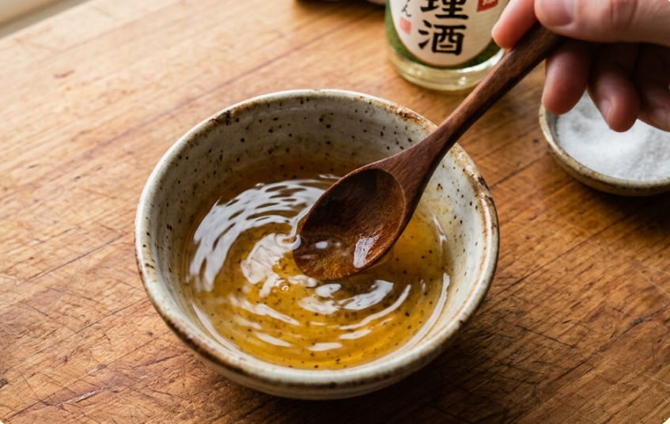
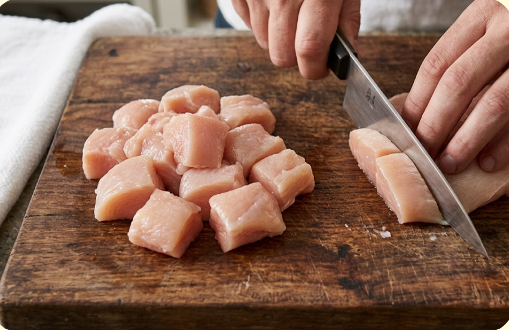
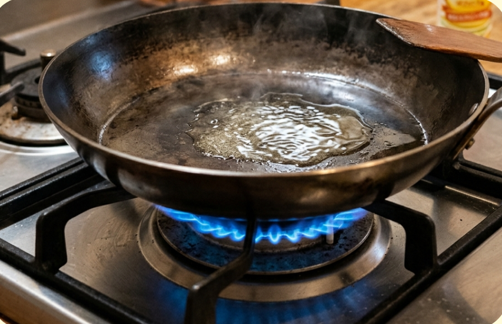
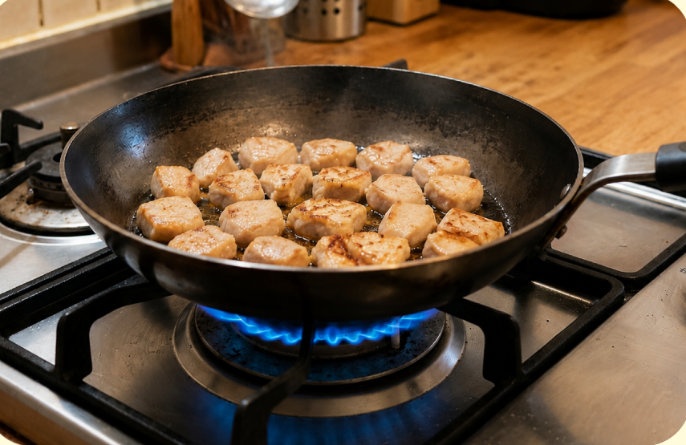
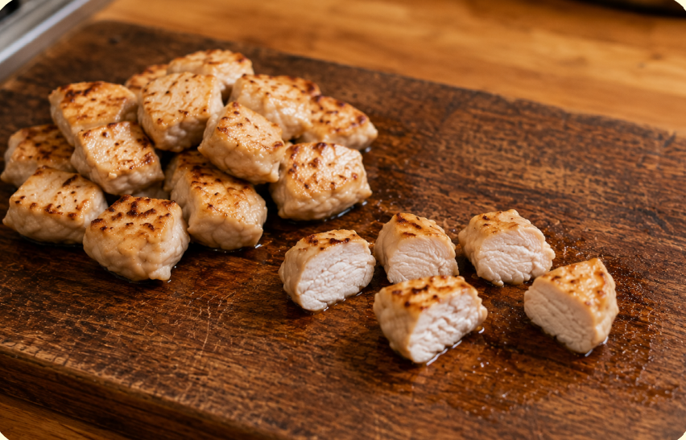
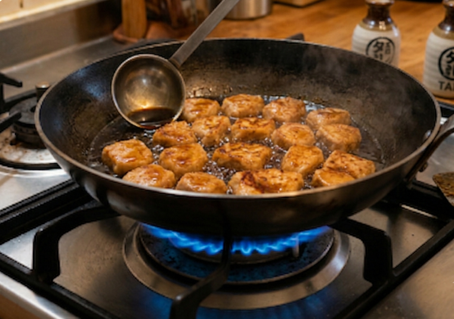
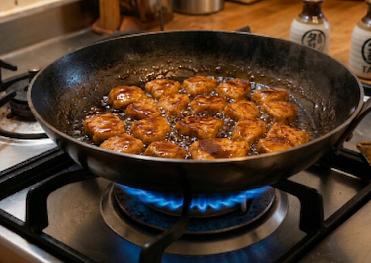

難易度３ ★★★
材料（一人分）
- ・鶏むね肉150g
- ・サラダ油小さじ1
- ・しょうゆ大さじ1
- ・みりん大さじ1
- ・砂糖小さじ2
必要な道具
- ・フライパン
- ・包丁
- ・まな板
- ・菜箸
注目ポイント
 包丁を使う
包丁を使う 火加減に注意
火加減に注意 鶏肉は十分加熱する
鶏肉は十分加熱する
作り方
① 鶏むね肉を食べやすい大きさに切ります。

② フライパンにサラダ油を入れ、中火で温めます。 鶏肉の皮を下にして並べ、3～4分焼きます。

③ 裏返してさらに3～4分焼き、中までしっかり火を通します。

④ しょうゆ・みりん・砂糖を加えます。

⑤ 菜箸で鶏肉を返しながら、たれを全体によくからめます。

⑥ たれに少しとろみがつき、鶏肉全体につやが出るまで加熱します。

⑦ お皿に盛り付けたら完成です。

調理のコツ
焼いている途中で何度も動かさず、
焼き色が付いてから返すときれいに仕上がります。
たれは焦げやすいので、加えた後は火加減に注意しましょう。
鶏肉の取り扱い
生の鶏肉には食中毒の原因となる菌が付いていることがあります。
鶏肉を触った後は、手・包丁・まな板を石けんでしっかり洗いましょう。
食べる前に、中まで十分火が通っていることを確認してください。